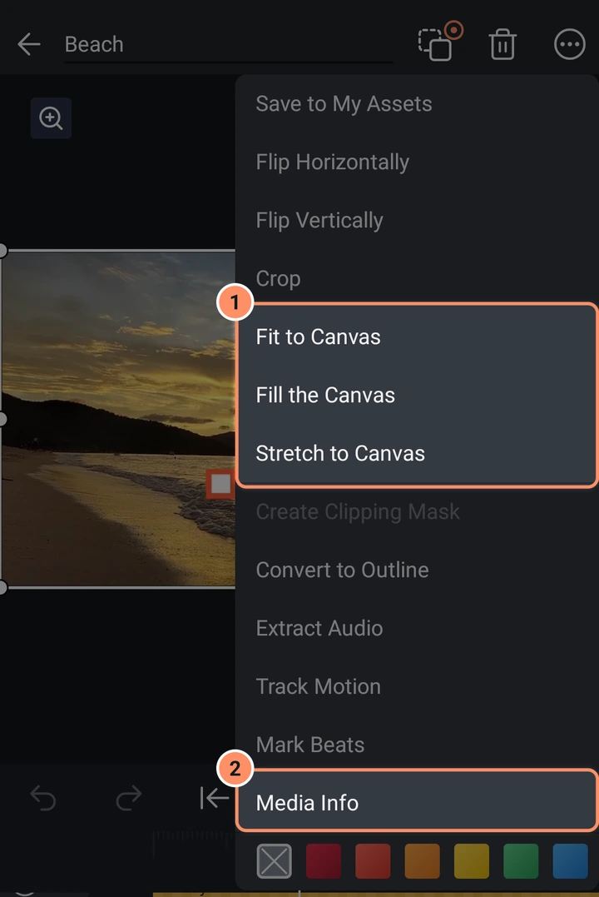
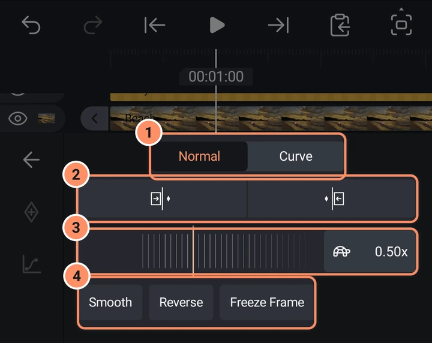
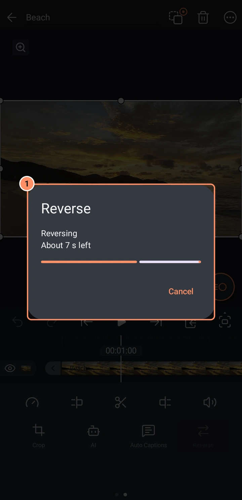

फ़ोटो, वीडियो और स्पीड
फ़ोटो और वीडियो जोड़ें, रूलर या कर्व से उनकी स्पीड बदलें, क्लिप को रिवर्स करें, फ़्रेम फ़्रीज़ करें और बड़े वीडियो को स्मूथ रखें।
इस पेज पर
फ़ोटो और वीडियो जोड़ें
Add मेन्यू के मीडिया टैब को खोलें और किसी तस्वीर या वीडियो पर टैप करें। यह प्लेहेड पर जोड़ा जाता है और कैनवास में फ़िट होने के लिए आकार दिया जाता है, फ़ाइल का रोटेशन बना रहता है। एक वीडियो फ़ाइल जितनी देर की है उतनी देर तक चलता है। आप कुछ नया शूट करने के लिए उसी टैब में कैमरा का भी उपयोग कर सकते हैं।
फ़ोटो और वीडियो चित्र फ़िल वाले आयत होते हैं, इसलिए उन पर सभी शेप टूल काम करते हैं: ट्रांसफ़ॉर्म, फ़्रेम और शैडो, ओपेसिटी और ब्लेंड मोड, इफ़ेक्ट्स इत्यादि।
डिफ़ॉल्ट रूप से ऐप जोड़े गए मीडिया की एक प्रति प्रोजेक्ट के अंदर रखता है (सेटिंग प्रोजेक्ट में आयातित मीडिया की एक प्रति रखें)। 32 MB से बड़ी फ़ाइलें प्रति बनाए जाने के दौरान "Copying ... into the project..." दिखाती हैं। यदि पर्याप्त खाली जगह नहीं है तो प्रोजेक्ट मूल फ़ाइल का उपयोग करता रहता है।
किसी तस्वीर को कैनवास में फ़िट करने के लिए लेयर मेन्यू का उपयोग करें: कैनवास में फ़िट करें पूरी तस्वीर दिखाता है, कैनवास भरें कैनवास को ढकता है और किनारों को क्रॉप करता है, कैनवास तक स्ट्रेच करें इसे ठीक से फ़िट करने के लिए विकृत करता है। देखें लेयर मेन्यू और मल्टी-सिलेक्ट।

मीडिया जानकारी और फ़ाइल बदलना
लेयर मेन्यू में मीडिया जानकारी फ़ाइल का नाम, आयाम, फ़्रेम रेट, अवधि, प्रारूप और आकार दिखाती है। मीडिया फ़ाइल बदलें फ़ोटो पिकर खोलता है और प्रोजेक्ट के उन सभी लेयर में उस फ़ाइल को बदल देता है जो उसका उपयोग करते हैं। जिस लेयर की फ़ाइल गायब हो गई है उसे ठीक करने का यही तरीका है।
स्पीड
किसी वीडियो या साउंड क्लिप को चुनें और स्पीड पर टैप करें (टूल ग्रिड का पहला छोटा बटन)। टाइम रीमैपिंग पैनल खुलता है। इसमें ऊपर दो टैब हैं, नॉर्मल और कर्व। अगर क्लिप में पहले से स्पीड कर्व हो, तो यह कर्व पर खुलता है।
नॉर्मल
- ऊपर के बटन क्लिप के आरंभ या अंत को प्लेहेड पर सेट करते हैं बिना वीडियो को ट्रिम किए: स्पीड इस तरह बदलती है कि वीडियो का वही भाग नई लंबाई में फ़िट हो जाए। सिर्फ़ वही बटन दिखते हैं जो प्लेहेड की जगह पर काम कर सकते हैं: क्लिप से पहले शुरुआत को प्लेहेड तक बढ़ाएँ, उसके अंदर शुरुआत से ट्रिम करें और अंत से ट्रिम करें, उसके बाद अंत को प्लेहेड तक बढ़ाएँ।
- रूलर पूरी क्लिप के लिए एक स्पीड सेट करता है, 0.05x से 100x तक। इसे बगल में ड्रैग करें; यह 1x पर क्लिक करता है।
- रूलर के पास का बॉक्स स्पीड दिखाता है और उसके साथ बदलने वाली एक छोटी तस्वीर: घोंघा, कछुआ, चलता हुआ इंसान, खरगोश, घोड़ा और सबसे ऊपर चीता। सटीक वैल्यू टाइप करने के लिए बॉक्स पर टैप करें।
- रूलर के नीचे चिप्स स्मूद, रिवर्स और फ़्रीज़ फ़्रेम हैं। इनका वर्णन नीचे है।

जब क्लिप में कर्व हो, तो रूलर उसकी औसत स्पीड दिखाता है। इसे बदलने से पूरा कर्व तेज़ या धीमा हो जाता है और उसका आकार वही रहता है।
क्लिप की आवाज़ उसकी स्पीड का अनुसरण करती है, इसलिए उसकी पिच भी साथ बदलती है।
कर्व
कर्व टैब समय के साथ स्पीड बदलता है, जैसे सिर्फ़ सबसे अच्छे पल को धीमा करने के लिए। टाइल्स की एक पंक्ति बगल में स्क्रोल होती है। पूरी क्लिप पर लगाने के लिए किसी टाइल पर टैप करें।
| टाइल | यह क्या करता है |
|---|---|
| कोई नहीं | कर्व हटाता है: क्लिप फिर से स्थिर 1x पर चलती है |
| कस्टम | आपके खुद आकार देने के लिए एक सपाट 1x कर्व; यह तुरंत एडिटर खोलता है |
| मोंटाज | 1x, 2.5x, 0.6x, 2.5x, 1x |
| हीरो | दोनों सिरों पर तेज़, बीच में धीमा (0.3x) |
| बुलेट | दोनों सिरों पर और भी तेज़ (3x), बीच में बहुत धीमा (0.2x) |
| जंप कट | 1x, बीच में 4x तक उछाल के साथ |
| फ़्लैश इन | 4x से शुरू होकर 1x तक ईज़ होता है |
| फ़्लैश आउट | 1x पर रहता है, फिर अंत में 4x तक तेज़ हो जाता है |

चुनी हुई टाइल पर फिर से टैप करके उसका कर्व एडिट करें। एडिटर क्लिप की तस्वीरों के ऊपर कर्व दिखाता है, 0.1x से 10x के बीच, और 1x पर एक बिंदीदार रेखा के साथ।
- बिंदु मूव करें। किसी बिंदु को छूकर ड्रैग करें। ऊपर-नीचे से उसकी स्पीड बदलती है, स्पीड 1x पर स्नैप होती है और हल्की टिक सुनाई देती है; बगल में ड्रैग करने से क्लिप में उसकी जगह बदलती है। खाली ग्राफ़ पर छूने या ड्रैग करने से इसके बजाय प्लेहेड क्लिप के साथ आगे-पीछे चलता है।
- बिंदु जोड़ें प्लेहेड पर एक नया बिंदु रखता है, कुल दस तक। कोई बिंदु चुना हो तो बटन बिंदु हटाएँ बन जाता है; पहला और आख़िरी बिंदु हटाया नहीं जा सकता।
- नीचे बाईं ओर का बॉक्स चुने हुए बिंदु की स्पीड दिखाता है, या कुछ चुना न हो तो प्लेहेड पर की स्पीड। वैल्यू टाइप करने के लिए उस पर टैप करें।
- ऊपर की बार बीच में क्लिप की लंबाई दिखाती है। ड्रैग करते समय वह पुरानी और नई लंबाई दिखाती है, जैसे "3.7 s → 4.2 s", और छोड़ने पर बदलाव लागू हो जाता है।
- रीसेट आपके खोले हुए कर्व को वापस रख देता है (कस्टम के लिए सपाट 1x)। ऊपर बाईं ओर का तीर एडिटर बंद करता है।
- स्मूद यहाँ एक स्विच है: यह स्मूद चिप जैसा ही है।

रिवर्स
रिवर्स वीडियो क्लिप को उल्टा चलाता है, तस्वीर और आवाज़ दोनों। ऐप क्लिप की उल्टी कॉपी बनाता है, इसलिए लंबी क्लिप में कुछ समय लगता है: एक बॉक्स रीवर्स हो रहा है और बचा हुआ समय दिखाता है, और रद्द करें उसे रोक देता है। रिवर्स की हुई क्लिप का चिप नारंगी रंग में जलता है; मूल पर लौटने के लिए रिवर्स पर फिर से टैप करें। यही बटन वीडियो के टूल ग्रिड के पेज 2 पर भी है। जिस क्लिप पर स्मूद या एन्हांस लगा हो, उससे पहले उन्हें हटाना होगा: ऐप कहता है "इस क्लिप को रिवर्स करने से पहले Smooth और Enhance हटाएँ"।

फ़्रीज़ फ़्रेम
फ़्रीज़ फ़्रेम (जब प्लेहेड क्लिप के अंदर हो) सेकंड पूछता है कि कितनी देर रोकना है (0.1 से 30) और प्लेहेड पर तस्वीर को रोके रखता है।
बड़े वीडियो और प्रीव्यू
1920 x 1080 से बड़ा वीडियो, या जिसके आंतरिक की-पिक्चर के बीच दो सेकंड से अधिक हो, स्क्रब करने में धीमा होता है। डिफ़ॉल्ट रूप से AbsentMotion बैकग्राउंड में एक छोटी प्रति बनाता है (बार के साथ एक पतली रेखा प्रगति दिखाती है) और प्रीव्यू और थंबनेल के लिए उसका उपयोग करता है। एक्सपोर्ट हमेशा मूल फ़ाइल पढ़ते हैं। आप इसे सेटिंग्स में बंद कर सकते हैं या प्रतियां साफ़ कर सकते हैं।
वीडियो से आवाज़ निकालें
लेयर मेन्यू में ऑडियो निकालें वीडियो की आवाज़ से एक ऑडियो लेयर बनाता है और वीडियो को म्यूट कर देता है। नई लेयर वीडियो की टाइमिंग, स्पीड, वॉल्यूम और ऑडियो इफ़ेक्ट्स बनाए रखती है। देखें ऑडियो।
बैकग्राउंड हटाएं
AI टूल किसी फ़ोटो या वीडियो से बैकग्राउंड काट सकते हैं और रिकॉर्डिंग में शोर कम कर सकते हैं। वे आपके फ़ोन पर चलते हैं। देखें AI टूल।
क्लिप को स्मूथ करें
स्मूद वीडियो क्लिप के स्पीड पैनल में रूलर के नीचे पहला चिप है (और कर्व एडिटर में एक स्विच)। यह उस क्लिप के लिए बीच के फ़्रेम एक बार बनाता है और उन्हें प्रोजेक्ट के साथ रखता है, ताकि प्रीव्यू और हर एक्सपोर्ट स्मूथ संस्करण दिखाएं। धीमी गति को तरल दिखाने का यह सबसे अच्छा तरीका है: आधी स्पीड पर 30 fps की क्लिप को हर फ़्रेम दो बार दिखाने के बजाय असली फ़्रेम के बीच नए फ़्रेम मिलते हैं।
- वीडियो क्लिप चुनें और स्पीड खोलें।
- स्मूथ पर टैप करें, फिर फ़्रेम ब्लेंडिंग, ऑप्टिकल फ़्लो या AI स्मूथ और एक स्तर (कम, मध्यम, उच्च) चुनें, और वैकल्पिक रूप से मोशन ब्लर। AI स्मूथ अपना मॉडल एक बार डाउनलोड करता है और दिखाता है कि इस फ़ोन पर इसमें कितना समय लगना चाहिए (देखें AI टूल)।
- इसके पूरा होने की प्रतीक्षा करें। आप किसी भी समय रद्द कर सकते हैं और कुछ नहीं बदलता।

मूल क्लिप रखी जाती है: क्लिप एक स्मूथ पंक्ति दिखाती है जिसमें एक रिस्टोर बटन है जो मूल को वापस लाता है, और अनडू भी काम करता है। फिर से स्मूथ करना हमेशा मूल से शुरू होता है। क्लिप का केवल ट्रिम किया गया भाग प्रोसेस होता है। क्लिप की आवाज़ जैसी है वैसी रखी जाती है।
एक्सपोर्ट करते समय स्मूथर मोशन
यदि आपकी वीडियो क्लिप का फ़्रेम रेट आपके एक्सपोर्ट से कम है, तो एक्सपोर्ट स्क्रीन पूरे वीडियो के लिए बीच के फ़्रेम और मोशन ब्लर भी जोड़ सकती है। एक्सपोर्ट पेज पर फ़्रेम इंटरपोलेशन और मोशन ब्लर देखें।